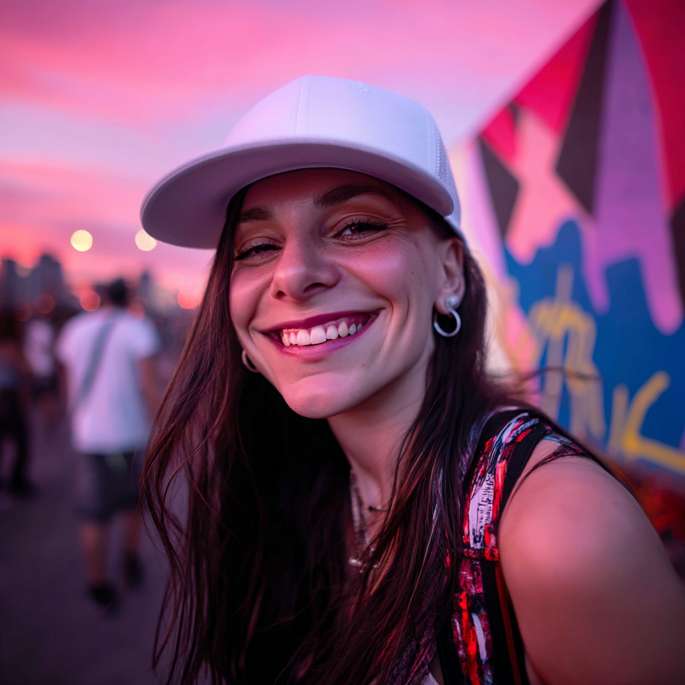

Hi, I'm Florencia Paramidani — a multidisciplinary Graphic Designer, Frontend Developer, and AI-based Visual Creator with over 10 years of experience turning ideas into powerful visual stories.
I specialize in branding, UI design, web development, and AI-generated imagery, combining a minimalist aesthetic with bold creativity. My work is grounded in strategy, shaped by design thinking, and driven by technology.
From e-commerce platforms to cultural projects, I've helped businesses and artists stand out with visuals that are smart, functional, and beautiful.
I'm passionate about building meaningful digital experiences — always aiming for clean code, strong concepts, and visuals that leave a mark.
If you're looking for a designer who thinks beyond trends, creates with purpose, and isn’t afraid to push the limits of design and tech — Let’s connect.